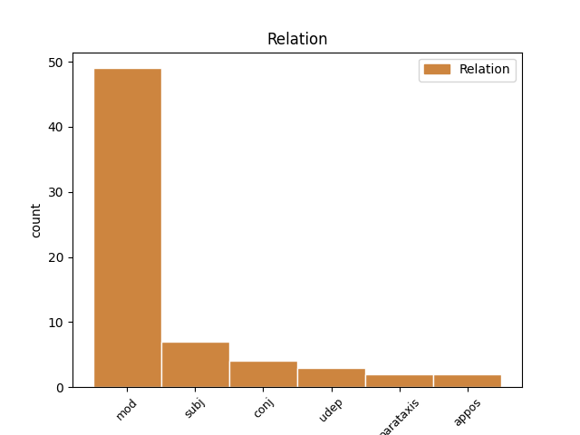
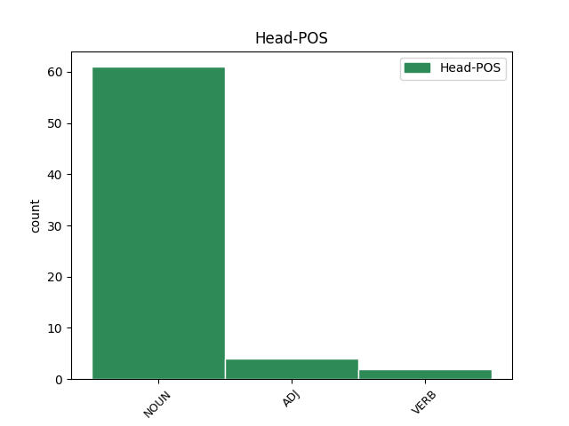
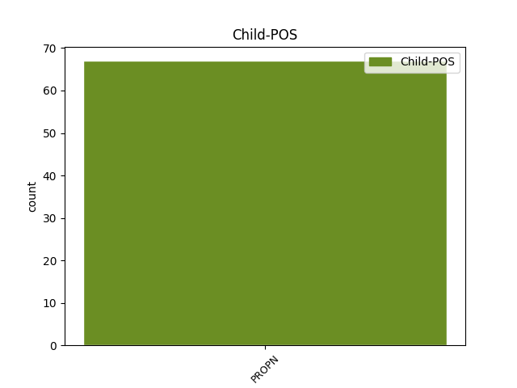

Distribution of features within this leaf



Agreement Rules sorted by frequency.
- When the dependent token is the modifer(mod) of the head token, and the head token is NOUN and the dependent token is PROPN.
1 Esu _ _ _ _ 0 _ _ _
2 ne _ _ _ _ 0 _ _ _
3 kartą _ _ _ _ 0 _ _ _
4 kalbėjęs _ _ _ _ 0 _ _ _
5 apie _ _ _ _ 0 _ _ _
6 pavojingą _ _ _ _ 0 _ _ _
7 „ _ _ _ _ 0 _ _ _
8 lietuviškąją _ _ _ _ 0 _ _ _
9 triadą _ _ _ _ 0 _ _ _
10 “ _ _ _ _ 0 _ _ _
11 ( _ _ _ _ 0 _ _ _
12 sakyčiau _ _ _ _ 0 _ _ _
13 , _ _ _ _ 0 _ _ _
14 lietuviškąjį _ _ _ _ 0 _ _ _
15 Bermudų Bermudai PROPN NNP Case=Gen|Gender=Masc|Number=Sing 16 mod _ En=Bermuda
16 trikampį trikampis NOUN NN Case=Acc|Gender=Masc|Number=Sing 0 _ _ _
17 ) _ _ _ _ 0 _ _ _
18 – _ _ _ _ 0 _ _ _
19 nesutarimus _ _ _ _ 0 _ _ _
20 su _ _ _ _ 0 _ _ _
21 rusais _ _ _ _ 0 _ _ _
22 , _ _ _ _ 0 _ _ _
23 lenkais _ _ _ _ 0 _ _ _
24 ir _ _ _ _ 0 _ _ _
25 žydais _ _ _ _ 0 _ _ _
26 , _ _ _ _ 0 _ _ _
27 arba _ _ _ _ 0 _ _ _
28 su _ _ _ _ 0 _ _ _
29 Rusija _ _ _ _ 0 _ _ _
30 , _ _ _ _ 0 _ _ _
31 Lenkija _ _ _ _ 0 _ _ _
32 ir _ _ _ _ 0 _ _ _
33 Izraeliu _ _ _ _ 0 _ _ _
34 . _ _ _ _ 0 _ _ _
1 Bet _ _ _ _ 0 _ _ _
2 kad _ _ _ _ 0 _ _ _
3 ir _ _ _ _ 0 _ _ _
4 ką _ _ _ _ 0 _ _ _
5 sakysi _ _ _ _ 0 _ _ _
6 , _ _ _ _ 0 _ _ _
7 vienas _ _ _ _ 0 _ _ _
8 skirtumas _ _ _ _ 0 _ _ _
9 yra _ _ _ _ 0 _ _ _
10 akivaizdus _ _ _ _ 0 _ _ _
11 – _ _ _ _ 0 _ _ _
12 Sokratas _ _ _ _ 0 _ _ _
13 nebūtų _ _ _ _ 0 _ _ _
14 padegęs _ _ _ _ 0 _ _ _
15 Strepsiado Strepsiadas PROPN NNP Case=Gen|Gender=Masc|Number=Sing 16 subj _ En=Strepsiade
16 namų namai NOUN NN Case=Gen|Gender=Masc|Number=Plur 0 _ _ _
17 ir _ _ _ _ 0 _ _ _
18 nebūtų _ _ _ _ 0 _ _ _
19 jo _ _ _ _ 0 _ _ _
20 įskundinėjęs _ _ _ _ 0 _ _ _
21 valdžiai _ _ _ _ 0 _ _ _
22 . _ _ _ _ 0 _ _ _
1 Turi _ _ _ _ 0 _ _ _
2 atsirasti _ _ _ _ 0 _ _ _
3 nauja _ _ _ _ 0 _ _ _
4 valstybinė _ _ _ _ 0 _ _ _
5 ir _ _ _ _ 0 _ _ _
6 tautinė _ _ _ _ 0 _ _ _
7 sąmonė _ _ _ _ 0 _ _ _
8 , _ _ _ _ 0 _ _ _
9 tokia _ _ _ _ 0 _ _ _
10 kaip _ _ _ _ 0 _ _ _
11 dabartinių _ _ _ _ 0 _ _ _
12 vokiečių _ _ _ _ 0 _ _ _
13 , _ _ _ _ 0 _ _ _
14 anglų _ _ _ _ 0 _ _ _
15 ar _ _ _ _ 0 _ _ _
16 prancūzų _ _ _ _ 0 _ _ _
17 , _ _ _ _ 0 _ _ _
18 o _ _ _ _ 0 _ _ _
19 ne _ _ _ _ 0 _ _ _
20 tokia _ _ _ _ 0 _ _ _
21 , _ _ _ _ 0 _ _ _
22 kaip _ _ _ _ 0 _ _ _
23 Radio Radio NOUN NN Case=Gen|Gender=Masc|Number=Sing 0 _ _ _
24 Maryja _ _ _ _ 0 _ _ _
25 lenkų _ _ _ _ 0 _ _ _
26 arba _ _ _ _ 0 _ _ _
27 Dugino Dugina PROPN NNP Case=Gen|Gender=Masc|Number=Sing 23 conj _ En=Dugina
28 bei _ _ _ _ 0 _ _ _
29 Prochanovo _ _ _ _ 0 _ _ _
30 rusų _ _ _ _ 0 _ _ _
31 . _ _ _ _ 0 _ _ _
1 Rašytoja _ _ _ _ 0 _ _ _
2 Vanda vanda PROPN NNP Case=Nom|Gender=Fem|Number=Sing 9 subj _ En=Vanda
3 Juknaitė _ _ _ _ 0 _ _ _
4 šeštadienį _ _ _ _ 0 _ _ _
5 Vytauto _ _ _ _ 0 _ _ _
6 Didžiojo _ _ _ _ 0 _ _ _
7 universitete _ _ _ _ 0 _ _ _
8 Kaune _ _ _ _ 0 _ _ _
9 paskelbta paskelbti VERB VBNL Case=Nom|Definite=Ind|Gender=Fem|Number=Sing|Polarity=Pos|Reflex=No|Tense=Past|VerbForm=Part|Voice=Pass 0 _ _ _
10 2016-ųjų _ _ _ _ 0 _ _ _
11 Tolerancijos _ _ _ _ 0 _ _ _
12 žmogumi _ _ _ _ 0 _ _ _
13 . _ _ _ _ 0 _ _ _
1 Gal _ _ _ _ 0 _ _ _
2 tas _ _ _ _ 0 _ _ _
3 Strepsiadas Strepsiadas PROPN NNP Case=Nom|Gender=Masc|Number=Sing 5 subj _ En=Strepsiade
4 truputį _ _ _ _ 0 _ _ _
5 komiškas komiškas ADJ JJL Case=Nom|Definite=Ind|Degree=Pos|Gender=Masc|Number=Sing 0 _ _ _
6 , _ _ _ _ 0 _ _ _
7 tačiau _ _ _ _ 0 _ _ _
8 be _ _ _ _ 0 _ _ _
9 jo _ _ _ _ 0 _ _ _
10 , _ _ _ _ 0 _ _ _
11 anot _ _ _ _ 0 _ _ _
12 Aristofano _ _ _ _ 0 _ _ _
13 , _ _ _ _ 0 _ _ _
14 visuomenė _ _ _ _ 0 _ _ _
15 ir _ _ _ _ 0 _ _ _
16 valstybė _ _ _ _ 0 _ _ _
17 nedelsiant _ _ _ _ 0 _ _ _
18 sugriūtų _ _ _ _ 0 _ _ _
19 . _ _ _ _ 0 _ _ _
1 Globalizmas _ _ _ _ 0 _ _ _
2 esąs _ _ _ _ 0 _ _ _
3 tik _ _ _ _ 0 _ _ _
4 plėšraus _ _ _ _ 0 _ _ _
5 kapitalizmo _ _ _ _ 0 _ _ _
6 priedanga _ _ _ _ 0 _ _ _
7 ir _ _ _ _ 0 _ _ _
8 pseudonimas _ _ _ _ 0 _ _ _
9 , _ _ _ _ 0 _ _ _
10 o _ _ _ _ 0 _ _ _
11 iš _ _ _ _ 0 _ _ _
12 to _ _ _ _ 0 _ _ _
13 plėšraus _ _ _ _ 0 _ _ _
14 kapitalizmo _ _ _ _ 0 _ _ _
15 turi _ _ _ _ 0 _ _ _
16 naudos _ _ _ _ 0 _ _ _
17 tik _ _ _ _ 0 _ _ _
18 tamsios _ _ _ _ 0 _ _ _
19 internacionalinės _ _ _ _ 0 _ _ _
20 jėgos _ _ _ _ 0 _ _ _
21 – _ _ _ _ 0 _ _ _
22 paprastai _ _ _ _ 0 _ _ _
23 dėl _ _ _ _ 0 _ _ _
24 viso _ _ _ _ 0 _ _ _
25 pikto _ _ _ _ 0 _ _ _
26 nesakoma _ _ _ _ 0 _ _ _
27 , _ _ _ _ 0 _ _ _
28 bet _ _ _ _ 0 _ _ _
29 gana _ _ _ _ 0 _ _ _
30 aiškiai _ _ _ _ 0 _ _ _
31 duodama _ _ _ _ 0 _ _ _
32 suprasti _ _ _ _ 0 _ _ _
33 , _ _ _ _ 0 _ _ _
34 kad _ _ _ _ 0 _ _ _
35 tai _ _ _ _ 0 _ _ _
36 žydai žydas NOUN NN Case=Nom|Gender=Masc|Number=Plur 0 _ _ _
37 ( _ _ _ _ 0 _ _ _
38 pavyzdžiui _ _ _ _ 0 _ _ _
39 Sorosas Sorosas PROPN NNP Case=Nom|Gender=Masc|Number=Sing 36 parataxis _ En=Soros|SpaceAfter=No
40 ) _ _ _ _ 0 _ _ _
41 . _ _ _ _ 0 _ _ _
1 Lietuvoje Lietuva PROPN NNP Case=Loc|Gender=Fem|Number=Sing 2 udep _ En=Lithuania
2 populiari populiarus ADJ JJL Case=Nom|Definite=Ind|Degree=Pos|Gender=Fem|Number=Sing 0 _ _ _
3 nacistams _ _ _ _ 0 _ _ _
4 artimo _ _ _ _ 0 _ _ _
5 mąstytojo _ _ _ _ 0 _ _ _
6 Carlo _ _ _ _ 0 _ _ _
7 Schmidto _ _ _ _ 0 _ _ _
8 doktorina _ _ _ _ 0 _ _ _
9 , _ _ _ _ 0 _ _ _
10 nors _ _ _ _ 0 _ _ _
11 jos _ _ _ _ 0 _ _ _
12 rėmėjai _ _ _ _ 0 _ _ _
13 kartais _ _ _ _ 0 _ _ _
14 gal _ _ _ _ 0 _ _ _
15 net _ _ _ _ 0 _ _ _
16 negirdėjo _ _ _ _ 0 _ _ _
17 to _ _ _ _ 0 _ _ _
18 vardo _ _ _ _ 0 _ _ _
19 . _ _ _ _ 0 _ _ _
Disagree Examples:
1 „ _ _ _ _ 0 _ _ _
2 Šis _ _ _ _ 0 _ _ _
3 apdovanojimas _ _ _ _ 0 _ _ _
4 jai _ _ _ _ 0 _ _ _
5 skirtas _ _ _ _ 0 _ _ _
6 už _ _ _ _ 0 _ _ _
7 dialogo _ _ _ _ 0 _ _ _
8 kūrimą _ _ _ _ 0 _ _ _
9 , _ _ _ _ 0 _ _ _
10 atminties _ _ _ _ 0 _ _ _
11 skatinimą _ _ _ _ 0 _ _ _
12 ir _ _ _ _ 0 _ _ _
13 sakymą _ _ _ _ 0 _ _ _
14 , _ _ _ _ 0 _ _ _
15 kad _ _ _ _ 0 _ _ _
16 svetimo _ _ _ _ 0 _ _ _
17 skausmo _ _ _ _ 0 _ _ _
18 nėra _ _ _ _ 0 _ _ _
19 , _ _ _ _ 0 _ _ _
20 kad _ _ _ _ 0 _ _ _
21 XX _ _ _ _ 0 _ _ _
22 amžiaus _ _ _ _ 0 _ _ _
23 tragedijos tragedija NOUN NN Case=Nom|Gender=Fem|Number=Plur 0 _ _ _
24 – _ _ _ _ 0 _ _ _
25 Holokauskas Holokauskas PROPN NNP Case=Nom|Gender=Masc|Number=Sing 23 appos _ En=Holocaust|SpaceAfter=No
26 , _ _ _ _ 0 _ _ _
27 tremtis _ _ _ _ 0 _ _ _
28 – _ _ _ _ 0 _ _ _
29 palietė _ _ _ _ 0 _ _ _
30 visus _ _ _ _ 0 _ _ _
31 Lietuvos _ _ _ _ 0 _ _ _
32 piliečius _ _ _ _ 0 _ _ _
33 , _ _ _ _ 0 _ _ _
34 nepaisant _ _ _ _ 0 _ _ _
35 jų _ _ _ _ 0 _ _ _
36 tautybės _ _ _ _ 0 _ _ _
37 “ _ _ _ _ 0 _ _ _
38 , _ _ _ _ 0 _ _ _
39 – _ _ _ _ 0 _ _ _
40 BNS _ _ _ _ 0 _ _ _
41 sakė _ _ _ _ 0 _ _ _
42 Sugiharos _ _ _ _ 0 _ _ _
43 fondo _ _ _ _ 0 _ _ _
44 „ _ _ _ _ 0 _ _ _
45 Diplomatai _ _ _ _ 0 _ _ _
46 už _ _ _ _ 0 _ _ _
47 gyvybę _ _ _ _ 0 _ _ _
48 “ _ _ _ _ 0 _ _ _
49 atstovas _ _ _ _ 0 _ _ _
50 Linas _ _ _ _ 0 _ _ _
51 Venclauskas _ _ _ _ 0 _ _ _
52 . _ _ _ _ 0 _ _ _
1 „ _ _ _ _ 0 _ _ _
2 Šis _ _ _ _ 0 _ _ _
3 apdovanojimas _ _ _ _ 0 _ _ _
4 jai _ _ _ _ 0 _ _ _
5 skirtas _ _ _ _ 0 _ _ _
6 už _ _ _ _ 0 _ _ _
7 dialogo _ _ _ _ 0 _ _ _
8 kūrimą _ _ _ _ 0 _ _ _
9 , _ _ _ _ 0 _ _ _
10 atminties _ _ _ _ 0 _ _ _
11 skatinimą _ _ _ _ 0 _ _ _
12 ir _ _ _ _ 0 _ _ _
13 sakymą _ _ _ _ 0 _ _ _
14 , _ _ _ _ 0 _ _ _
15 kad _ _ _ _ 0 _ _ _
16 svetimo _ _ _ _ 0 _ _ _
17 skausmo _ _ _ _ 0 _ _ _
18 nėra _ _ _ _ 0 _ _ _
19 , _ _ _ _ 0 _ _ _
20 kad _ _ _ _ 0 _ _ _
21 XX _ _ _ _ 0 _ _ _
22 amžiaus _ _ _ _ 0 _ _ _
23 tragedijos _ _ _ _ 0 _ _ _
24 – _ _ _ _ 0 _ _ _
25 Holokauskas _ _ _ _ 0 _ _ _
26 , _ _ _ _ 0 _ _ _
27 tremtis _ _ _ _ 0 _ _ _
28 – _ _ _ _ 0 _ _ _
29 palietė _ _ _ _ 0 _ _ _
30 visus _ _ _ _ 0 _ _ _
31 Lietuvos Lietuva PROPN NNP Case=Gen|Gender=Fem|Number=Sing 32 mod _ En=Lithuania
32 piliečius pilietis NOUN NN Case=Acc|Gender=Masc|Number=Plur 0 _ _ _
33 , _ _ _ _ 0 _ _ _
34 nepaisant _ _ _ _ 0 _ _ _
35 jų _ _ _ _ 0 _ _ _
36 tautybės _ _ _ _ 0 _ _ _
37 “ _ _ _ _ 0 _ _ _
38 , _ _ _ _ 0 _ _ _
39 – _ _ _ _ 0 _ _ _
40 BNS _ _ _ _ 0 _ _ _
41 sakė _ _ _ _ 0 _ _ _
42 Sugiharos _ _ _ _ 0 _ _ _
43 fondo _ _ _ _ 0 _ _ _
44 „ _ _ _ _ 0 _ _ _
45 Diplomatai _ _ _ _ 0 _ _ _
46 už _ _ _ _ 0 _ _ _
47 gyvybę _ _ _ _ 0 _ _ _
48 “ _ _ _ _ 0 _ _ _
49 atstovas _ _ _ _ 0 _ _ _
50 Linas _ _ _ _ 0 _ _ _
51 Venclauskas _ _ _ _ 0 _ _ _
52 . _ _ _ _ 0 _ _ _
1 „ _ _ _ _ 0 _ _ _
2 Šis _ _ _ _ 0 _ _ _
3 apdovanojimas _ _ _ _ 0 _ _ _
4 jai _ _ _ _ 0 _ _ _
5 skirtas _ _ _ _ 0 _ _ _
6 už _ _ _ _ 0 _ _ _
7 dialogo _ _ _ _ 0 _ _ _
8 kūrimą _ _ _ _ 0 _ _ _
9 , _ _ _ _ 0 _ _ _
10 atminties _ _ _ _ 0 _ _ _
11 skatinimą _ _ _ _ 0 _ _ _
12 ir _ _ _ _ 0 _ _ _
13 sakymą _ _ _ _ 0 _ _ _
14 , _ _ _ _ 0 _ _ _
15 kad _ _ _ _ 0 _ _ _
16 svetimo _ _ _ _ 0 _ _ _
17 skausmo _ _ _ _ 0 _ _ _
18 nėra _ _ _ _ 0 _ _ _
19 , _ _ _ _ 0 _ _ _
20 kad _ _ _ _ 0 _ _ _
21 XX _ _ _ _ 0 _ _ _
22 amžiaus _ _ _ _ 0 _ _ _
23 tragedijos _ _ _ _ 0 _ _ _
24 – _ _ _ _ 0 _ _ _
25 Holokauskas _ _ _ _ 0 _ _ _
26 , _ _ _ _ 0 _ _ _
27 tremtis _ _ _ _ 0 _ _ _
28 – _ _ _ _ 0 _ _ _
29 palietė _ _ _ _ 0 _ _ _
30 visus _ _ _ _ 0 _ _ _
31 Lietuvos _ _ _ _ 0 _ _ _
32 piliečius _ _ _ _ 0 _ _ _
33 , _ _ _ _ 0 _ _ _
34 nepaisant _ _ _ _ 0 _ _ _
35 jų _ _ _ _ 0 _ _ _
36 tautybės _ _ _ _ 0 _ _ _
37 “ _ _ _ _ 0 _ _ _
38 , _ _ _ _ 0 _ _ _
39 – _ _ _ _ 0 _ _ _
40 BNS _ _ _ _ 0 _ _ _
41 sakė _ _ _ _ 0 _ _ _
42 Sugiharos sugihara PROPN NNP Case=Gen|Gender=Fem|Number=Sing 43 mod _ En=Sugihara
43 fondo fondas NOUN NN Case=Gen|Gender=Masc|Number=Sing 0 _ _ _
44 „ _ _ _ _ 0 _ _ _
45 Diplomatai _ _ _ _ 0 _ _ _
46 už _ _ _ _ 0 _ _ _
47 gyvybę _ _ _ _ 0 _ _ _
48 “ _ _ _ _ 0 _ _ _
49 atstovas _ _ _ _ 0 _ _ _
50 Linas _ _ _ _ 0 _ _ _
51 Venclauskas _ _ _ _ 0 _ _ _
52 . _ _ _ _ 0 _ _ _
1 Ši _ _ _ _ 0 _ _ _
2 kasmetinė _ _ _ _ 0 _ _ _
3 nominacija _ _ _ _ 0 _ _ _
4 skiriama _ _ _ _ 0 _ _ _
5 asmeniui _ _ _ _ 0 _ _ _
6 , _ _ _ _ 0 _ _ _
7 stojusiam _ _ _ _ 0 _ _ _
8 prieš _ _ _ _ 0 _ _ _
9 ksenofobijos _ _ _ _ 0 _ _ _
10 bei _ _ _ _ 0 _ _ _
11 antisemitizmo _ _ _ _ 0 _ _ _
12 , _ _ _ _ 0 _ _ _
13 kitaminčių _ _ _ _ 0 _ _ _
14 , _ _ _ _ 0 _ _ _
15 kitatikių _ _ _ _ 0 _ _ _
16 bei _ _ _ _ 0 _ _ _
17 kitataučių _ _ _ _ 0 _ _ _
18 persekiojimą _ _ _ _ 0 _ _ _
19 , _ _ _ _ 0 _ _ _
20 pasisakiusiam _ _ _ _ 0 _ _ _
21 prieš _ _ _ _ 0 _ _ _
22 smurto _ _ _ _ 0 _ _ _
23 , _ _ _ _ 0 _ _ _
24 prievartos _ _ _ _ 0 _ _ _
25 ir _ _ _ _ 0 _ _ _
26 radikalizmo _ _ _ _ 0 _ _ _
27 apraiškas _ _ _ _ 0 _ _ _
28 visuomeniniame _ _ _ _ 0 _ _ _
29 Lietuvos Lietuva PROPN NNP Case=Gen|Gender=Fem|Number=Sing 30 mod _ En=Lithuania
30 gyvenime gyvenimas NOUN NN Case=Loc|Gender=Masc|Number=Sing 0 _ _ _
31 . _ _ _ _ 0 _ _ _
1 Vėliau _ _ _ _ 0 _ _ _
2 metų _ _ _ _ 0 _ _ _
3 Tolerancijos _ _ _ _ 0 _ _ _
4 žmogaus _ _ _ _ 0 _ _ _
5 titulas _ _ _ _ 0 _ _ _
6 atiteko _ _ _ _ 0 _ _ _
7 profesorei profesorė NOUN NN Case=Dat|Gender=Fem|Number=Sing 0 _ _ _
8 Irenai _ _ _ _ 0 _ _ _
9 Veisaitei _ _ _ _ 0 _ _ _
10 , _ _ _ _ 0 _ _ _
11 žurnalistui _ _ _ _ 0 _ _ _
12 Algimantui algimantas PROPN NNP Case=Dat|Gender=Masc|Number=Sing 7 conj _ En=Algimantas
13 Čekuoliui _ _ _ _ 0 _ _ _
14 , _ _ _ _ 0 _ _ _
15 režisieriui _ _ _ _ 0 _ _ _
16 Sauliui _ _ _ _ 0 _ _ _
17 Beržiniui _ _ _ _ 0 _ _ _
18 , _ _ _ _ 0 _ _ _
19 pranciškonų _ _ _ _ 0 _ _ _
20 vienuoliui _ _ _ _ 0 _ _ _
21 , _ _ _ _ 0 _ _ _
22 kunigui _ _ _ _ 0 _ _ _
23 Arūnui _ _ _ _ 0 _ _ _
24 Peškaičiui _ _ _ _ 0 _ _ _
25 , _ _ _ _ 0 _ _ _
26 psichologui _ _ _ _ 0 _ _ _
27 Robertui _ _ _ _ 0 _ _ _
28 Povilaičiui _ _ _ _ 0 _ _ _
29 , _ _ _ _ 0 _ _ _
30 atlikėjai _ _ _ _ 0 _ _ _
31 Jurgai _ _ _ _ 0 _ _ _
32 Šeduikytei _ _ _ _ 0 _ _ _
33 , _ _ _ _ 0 _ _ _
34 žurnalistui _ _ _ _ 0 _ _ _
35 Mykolui _ _ _ _ 0 _ _ _
36 Drungai _ _ _ _ 0 _ _ _
37 , _ _ _ _ 0 _ _ _
38 poetui _ _ _ _ 0 _ _ _
39 Tomui _ _ _ _ 0 _ _ _
40 Venclovai _ _ _ _ 0 _ _ _
41 , _ _ _ _ 0 _ _ _
42 filosofui _ _ _ _ 0 _ _ _
43 Andriui _ _ _ _ 0 _ _ _
44 Navickui _ _ _ _ 0 _ _ _
45 rašytojams _ _ _ _ 0 _ _ _
46 Daivai _ _ _ _ 0 _ _ _
47 Čepauskaitei _ _ _ _ 0 _ _ _
48 ir _ _ _ _ 0 _ _ _
49 Sigitui _ _ _ _ 0 _ _ _
50 Parulskiui _ _ _ _ 0 _ _ _
51 , _ _ _ _ 0 _ _ _
52 muzikantui _ _ _ _ 0 _ _ _
53 Andriui _ _ _ _ 0 _ _ _
54 Mamontovui _ _ _ _ 0 _ _ _
55 , _ _ _ _ 0 _ _ _
56 žurnalistui _ _ _ _ 0 _ _ _
57 Donatui _ _ _ _ 0 _ _ _
58 Pusliui _ _ _ _ 0 _ _ _
59 , _ _ _ _ 0 _ _ _
60 verslininkui _ _ _ _ 0 _ _ _
61 Valdui _ _ _ _ 0 _ _ _
62 Balčiūnui _ _ _ _ 0 _ _ _
63 . _ _ _ _ 0 _ _ _